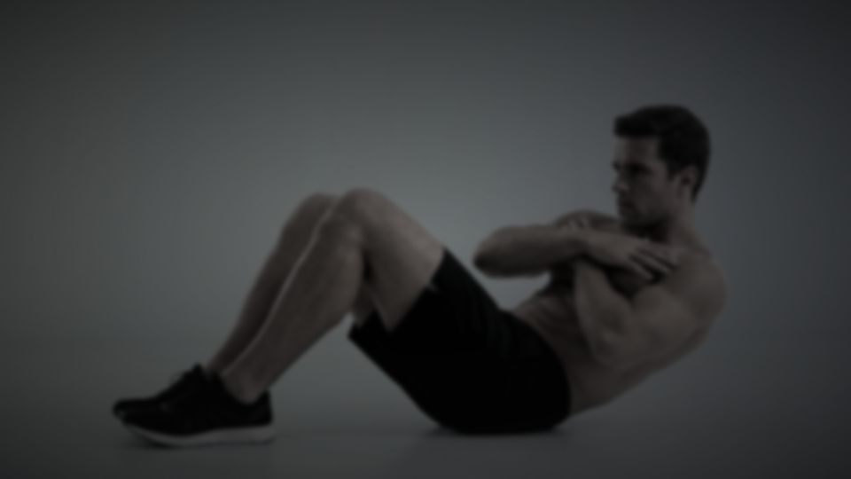
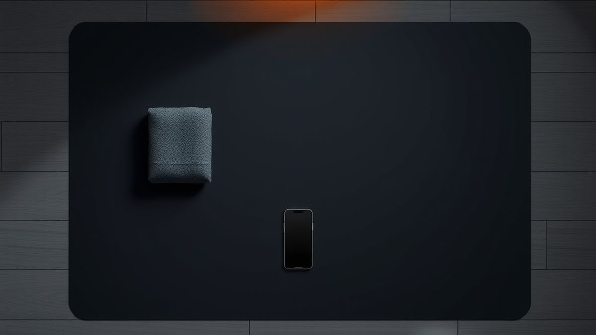

Sit-Ups vs. Crunches: Which Should You Do?
Sit-ups vs crunches: the real difference, what the back research shows (lab and big trials), which one to pick, form steps, easier versions and a plan.


TL;DR
- A crunch lifts only your shoulder blades; a sit-up goes all the way up, and the second half is mostly your hip flexors.
- Start with crunches: shorter, easier to control, and heavy on the abs.
- The back debate is mixed: lab work on pig spines flags repeated rounding, but trials in thousands of soldiers found no difference in injuries or back pain.
- Back pain now, or a past disc injury: skip sit-ups, use dead bugs and planks, and check with a doctor.
- A few sets of 8 to 15 good reps, two or three days a week, is enough.
You lie down on the rug, hook your feet under the couch and start pulling yourself up. By rep 12 you're yanking on your neck, your feet keep sliding out, and the part that's burning is the top of your thighs, not your stomach.
Then you remember someone saying sit-ups are bad for your back. So you switch to crunches, and now you're not sure those count.
Here's the straight answer to sit-ups vs. crunches: both work your abs, the crunch is the better place to start for most people, and the scary back stories are a lot less settled than they sound. Below: the actual difference, what the research does and doesn't show, how to do each one right, and easier versions if neither feels good yet.
Sit-ups vs. crunches: the short answer
The difference is how far you come up.
A crunch lifts only your head and shoulder blades off the floor. Your lower back stays down. It's a short move that mostly works the long muscle down the front of your stomach.
A sit-up keeps going until your chest is near your knees. The first part is a crunch. The second half is mostly your hip flexors, the muscles at the front of your hips, pulling your whole torso up.
| Crunch | Sit-up | |
|---|---|---|
| How far you come up | Shoulder blades just off the floor | All the way to sitting |
| Main muscles | Abs | Abs, then hip flexors |
| Easier to do well | Yes, short and controlled | Harder; form slips as you tire |
| Lower back | Stays on the floor | Rounds and lifts off |
| Good pick if | You're new, or your back is touchy | Crunches are easy and your back feels fine |
Pick the crunch if you're starting out. Move on to sit-ups later if you want the full range, or skip them. Neither one is required for a strong core.
What the research says about your abs
In a 2006 study, Rafael Escamilla and colleagues measured muscle activity with sensors on the skin while 14 people did crunches, bent-knee sit-ups and seven ab gadgets. The crunch was among the exercises with the highest activity in the main stomach muscle. The bent-knee sit-up worked the abs too, but it also lit up the rectus femoris, a hip flexor on the front of the thigh, and the authors flagged it as possibly a problem for people with low back trouble.
Keep that in proportion: 14 people, five reps each, muscle activity rather than strength gained over weeks. It shows where the work goes during each move, not which one makes you stronger.
That matches the burning thighs in the opening scene. When you anchor your feet and pull, a lot of the sit-up is your hips doing the lifting. Harvard Health makes the same point: sit-ups work the hip flexors, and planks recruit a better balance of muscles on the front, sides and back of your body.

Are sit-ups bad for your back?
This is where most articles pick a side. The honest answer is that two kinds of evidence point in different directions.
The case against: lab work
Much of the worry comes from Stuart McGill's spine lab at the University of Waterloo. In one well-known experiment (Callaghan and McGill, 2001), pig spine segments were bent forward and back thousands of times under a modest load, and the discs eventually herniated. Repeated rounding of the spine under load, the argument goes, is exactly what a sit-up does.
That's a real mechanism, but it's a machine bending pig spines for hours. It doesn't tell you what 20 sit-ups a few times a week do to a living person whose body recovers between sessions.
The case for: big trials in people
The U.S. Army tested the question on a much larger scale. In a 2009 trial, 2,616 soldiers aged 18 to 35 were randomly assigned for 12 weeks either to a traditional program that included sit-ups or to core stability exercises without them. Both groups got better at sit-ups, with no meaningful difference between them.
A related trial followed 1,141 soldiers through 16 weeks of training. Injury rates were the same in both groups. Soldiers who did hurt their lower back missed fewer days of duty in the core stability group (about 4 days versus 8), which the authors called only marginal evidence.
The largest of these, the POLM trial with 4,325 soldiers, found no difference in back pain that needed medical care between the traditional exercise program and core stabilization. What did lower it was a short class that taught people not to fear back pain.
Those were young, fit soldiers in a military setting, and the authors note the results may not carry over to everyone. But they're real people, randomized, followed for weeks to years.
What that means for you
- Healthy back, no pain: sit-ups in sensible amounts aren't something to fear. Crunches are still the easier one to do well.
- Back pain now, or a past disc injury: skip full sit-ups for now and use the easier options below. Check with a doctor or physical therapist first.
- Either way: pain that's sharp, shoots down a leg, or lingers after the set means stop.
How to do a crunch
- Set up. Lie on your back, knees bent, feet flat and about hip-width apart.
- Hands light. Cross your arms over your chest, or rest your fingertips beside your ears. Don't lace your fingers behind your head and pull.
- Brace. Tighten your stomach as if you're about to be poked.
- Curl up. Breathe out and lift your head and shoulder blades off the floor. Keep a fist's worth of space between your chin and chest.
- Lower slowly. Take two or three seconds to come back down. That's the rep.
Your lower back stays on the floor the whole time. If your neck is doing the work, put your hands across your chest and lift a little less.
How to do a sit-up
- Set up like a crunch. Knees bent, feet flat. Anchoring your feet makes it easier but hands more of the work to your hip flexors; try it without first.
- Curl, then sit. Start with the crunch: chin tucked, shoulders up. Keep rolling up one section of your spine at a time until you're sitting tall.
- Roll down. Lower yourself with control, the same way you came up. Don't drop back onto the floor.
When to end the set
- You're yanking on your head or neck to get up.
- You have to swing your arms or throw yourself up.
- You feel it in your lower back more than your stomach.
- You're holding your breath.

Easier versions, and what to do if your back complains
Start where you can do 8 to 10 controlled reps, and move up a step when 2 sets of 12 feel steady.
- Dead bug. On your back, arms up, knees bent over your hips. Slowly lower one arm and the opposite leg toward the floor, keeping your lower back down, then switch. Your spine barely moves.
- Partial crunch. Lift just your head and the tops of your shoulders, hold for a breath, lower.
- Crunch. The full version above.
- Sit-up, feet free. If you want the full range.
If curling up bothers your back at all, leave the rounding moves out for now. A plank works your abs while your spine stays still; see how long to hold a plank for times and an easier ladder. Bird dogs (on hands and knees, reach one arm and the opposite leg out) are another gentle option.
A 2-week starter plan
Three days a week, with a day off between. The U.S. Physical Activity Guidelines recommend muscle-strengthening work on two or more days a week, so this, plus a few squats or push-ups, covers it.
| Day | Week 1 | Week 2 |
|---|---|---|
| 1 | 2 × 8 crunches, 2 × 20-second planks | 3 × 10 crunches, 2 × 30-second planks |
| 2 | 2 × 6 dead bugs per side, 2 × 8 crunches | 3 × 8 dead bugs per side, 3 × 10 crunches |
| 3 | 2 × 10 crunches | 3 × 12 crunches, or 2 × 5 slow sit-ups |
Rest about a minute between sets. If a day feels hard, repeat it next time. You can also split it up: a set of crunches here and there through the day counts, the same idea as exercise snacks.
Safety notes
- Effort, not pain. A burning stomach is normal. Sharp pain, pain down a leg, or pain that lasts after the set means stop.
- Neck: hands across your chest if you catch yourself pulling on your head.
- Check with a doctor first if you have back pain now, a past disc or spine injury, a heart condition or high blood pressure, are pregnant or recently gave birth, or haven't exercised in a long time.
Questions people ask
Do I need sit-ups to have a strong core?
No. Your core is more than the muscle a sit-up works: it includes the sides and back of your trunk too. A mix of crunches, planks and dead bugs covers it, and plenty of people skip sit-ups entirely.
How many should I do a day?
Fewer than you think. A few sets of 8 to 15 good reps, stopping when form slips, beats 100 sloppy ones. You don't need them every day; two or three days a week is plenty.
Why do sit-ups hurt my hips or thighs?
That's your hip flexors doing the second half of the move, especially with your feet anchored. Try them with your feet free, or stick to crunches.
A set of sit-ups instead of another scroll
Ab work has one thing going for it: you can do it on the same floor where you're lying with your phone. Ten crunches take less than a minute.
Rep Rot locks the apps you lose hours to until you get up and move. Set a daily limit, and when you hit it, the apps lock until you do a set: sit-ups, or squats, push-ups, pull-ups or a plank, counted by your iPhone's front camera right on the phone. Nothing is recorded or uploaded. It counts the reps; it doesn't coach your form, so the checklist above is still on you.

Like any Screen Time limit, it can be worked around by someone determined, and it can't see which apps you picked. What it changes is what the next scroll costs. More on that in the 10-rep rule. Don't rot. Rep instead. Rep Rot has a free plan and a 7-day Pro trial, and it's in testing now: email help@reprotapp.com for early access.
Sources: Escamilla RF et al., "An electromyographic analysis of commercial and common abdominal exercises: implications for rehabilitation and training", Journal of Orthopaedic & Sports Physical Therapy (2006); Callaghan JP, McGill SM, "Intervertebral disc herniation: studies on a porcine model exposed to highly repetitive flexion/extension motion with compressive force", Clinical Biomechanics (2001); Childs JD et al., "Effects of sit-up training versus core stabilization exercises on sit-up performance", Medicine & Science in Sports & Exercise (2009); Childs JD et al., "Effects of traditional sit-up training versus core stabilization exercises on short-term musculoskeletal injuries in US Army soldiers: a cluster randomized trial", Physical Therapy (2010); George SZ et al., "Brief psychosocial education, not core stabilization, reduced incidence of low back pain: results from the Prevention of Low Back Pain in the Military (POLM) cluster randomized trial", BMC Medicine (2011); Harvard Health Publishing, "Want a stronger core? Skip the sit-ups"; Physical Activity Guidelines for Americans, 2nd edition (2018).